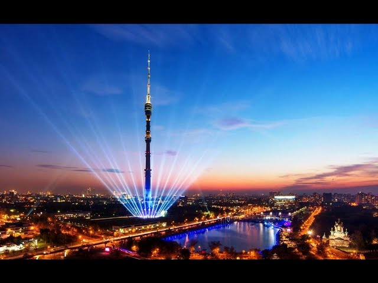

Останкинская телебашня
===============
### Описание
Останкинская телебашня (прежнее название — «Общесоюзная радиотелевизионная передающая станция им. 50-летия Октября») — телевизионная и радиовещательная башня, расположенная в Останкинском районе Москвы. Высота — 540,1 м, на момент постройки — высочайшая в мире, а по состоянию на сентябрь 2019 года — 14-е по высоте сооружение из когда-либо существовавших.
Также является высочайшим сооружением в Европе и России, а также полноправным членом Всемирной федерации высотных башен.
На момент окончания строительства в зоне действия передатчиков проживало около 10 000 000 человек, сегодня башня охватывает территорию с населением свыше 15 000 000 человек. Телебашня принадлежит филиалу ФГУП «Российская телевизионная и радиовещательная сеть» — «Московскому региональному центру».
## История
Московский телевизионный центр на улице Шаболовке был построен в 1936—1938 годах возле Шуховской башни, на которой была установлена передающая телевизионная антенна.
9 марта 1938 года в эфир вышла первая пробная передача, а в 1939 году телецентр начал регулярную работу.
Сигнал с Шуховской башни обеспечивал уверенный приём телепрограмм почти на всей площади Москвы и Московской области, но в масштабах страны его мощность была недостаточной.
В 1953 году Сергей Новаковский, Ф. Большаков и Н. Скачков обратились к председателю Всесоюзного радиокомитета Алексею Пузину с предложением построить в Москве «фабрику телевизионных программ» — многопрограммный телецентр с 15—20 студиями, передающей станцией и башней-антенной высотой 500 метров, которая обеспечила бы уверенный приём за пределами московского региона.
Пузин дал проекту одобрение и представил его Никите Хрущёву, и 15 июля 1955 года Совет министров СССР издал постановление «О строительстве нового телепередающего центра». В январе 1956 года для строительства был выделен участок в районе Черёмушек, но изыскания показали непригодность почв для строительства массивного сооружения.
После Черёмушек рассматривались участки около Берсеневской набережной, в районе Кропоткинской улицы и Калужской заставы, а подходящий был найден на территории Останкинского питомника Управления благоустройства города Москвы.
Был проведён всесоюзный конкурс на лучший проект телебашни, который выиграл киевский проектный институт, специализировавшийся на стальных конструкциях и предложивший ажурную металлическую башню наподобие башни Эйфеля в Париже. Заявка не вызвала энтузиазма у архитекторов, которым предстояло претворять проект в жизнь, а член конкурсной комиссии, специалист по железобетонным и металлическим конструкциям Николай Никитин выступил с неожиданным альтернативным предложением — выполнить башню из бетона.
Подобный проект бетонной телебашни был успешно выполнен 2 годами ранее в Штутгарте, поэтому ко мнению Никитина прислушались, и инженеру дали возможность подготовить собственную заявку.
Предложенная им конструкция была основана на наработках Юрия Кондратюка, автора нереализованного проекта Крымской ветряной электростанции на горе Ай-Петри, помощником которого Никитин работал в 1930-х годах. Кондратюк задумал бетонную конструкцию ветроэлектростанции тонкой и полой, а её прочность должны были обеспечивать стальные канаты под напряжением. В проекте Никитина предотвращение деформации и разрушения бетонного каркаса из отдельных круглых блоков также обеспечивали 149 натянутых тросов.
Никитин утверждал, что разработал проект за 1 ночь, а прообразом конусообразного основания башни стала привидевшаяся инженеру во сне перевёрнутая лилия — цветка с крепкими лепестками и толстым стеблем. Впрочем, Никитин стал не первым, кто предложил подобное решение: в 1932 году популярный в Советском Союзе итальянский инженер Пьер Луиджи Нерви представил на один из конкурсов 300-метровую стройную башню, выраставшую из конусообразного основания и увенчанную металлической мачтой.
Башня Никитина отличалась от проекта Нерви более длинным стволом и более широким основанием.